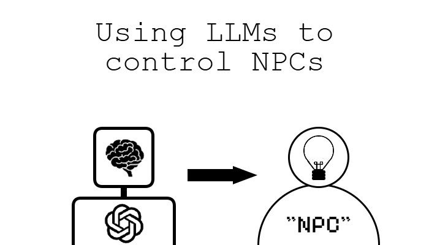
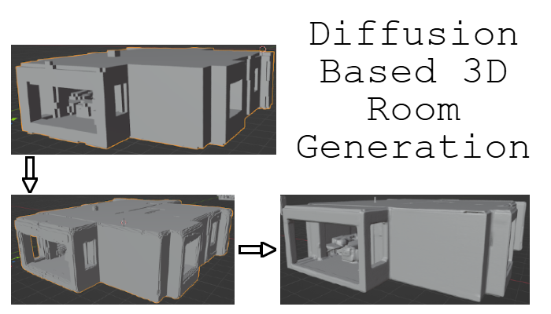

My Software Development Projects
On this page, you'll find my various Software Development projects. My Github page is where most of my projects exist, but this page also houses some things that aren't on my Github, like research projects.

Harvest Havoc:
A high-score based, arcade-style game about collecting falling produce while avoiding obstacles!
Randolph College's Video Game Development Workshop Series:
The landing page for the Video Game Development program I started at Randolph College for students interested in game design and development!

Using Prompt Engineering to Constrain LLMs for Dynamic NPC Behavior
My technical report for my Senior Seminar Capstone Project at Randolph College. This project builds off of the work of Generative Agents: Interactive Simulacra of Human Behavior, and was worked on in a 7 week period.

3D Room Generation from 2D Semantic Layout
My technical report for a new process generating 3D rooms from a 2D semantic layout. I worked on this project with Dr. Rui Yu and Zitong Zhang at the University of Louisville during the 2025 REU Site Summer Research Program.